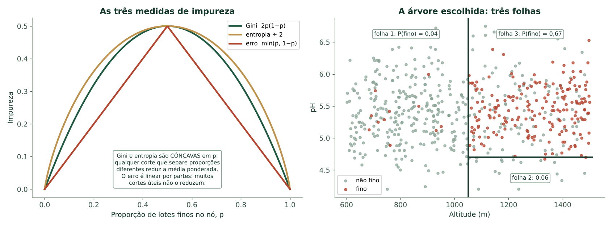
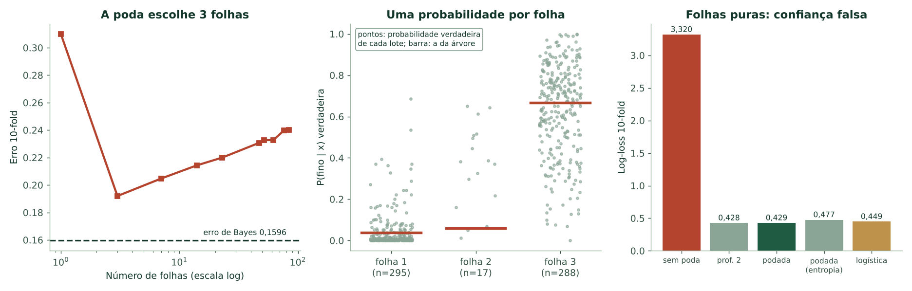

Árvore de classificação (CART)
Partição em retângulos com a classe majoritária em cada folha — cresce por Gini ou entropia, poda pelo erro validado, e dá probabilidades grosseiras.
Comece por aqui
A árvore de classificação é a irmã da árvore de regressão: mesma partição do espaço em retângulos, mesmo crescimento guloso e mesma poda. Muda o que se prevê em cada folha — a classe majoritária e a proporção de cada classe — e muda o critério de corte, que passa a ser uma medida de impureza do nó.
Nos dados de café, a melhor árvore de classificação tem três folhas: altitude ≤ 1.050,9 m; acima disso, pH ≤ 4,7; e o resto. Com essas duas regras ela erra 19,20% dos lotes na validação cruzada — menos que a regressão logística com as seis variáveis (23,07%). É um bom exemplo de que um modelo simples, com a forma certa, pode bater um modelo com mais parâmetros e a forma errada.
O que é uma árvore de classificação
Em cada nó, calcula-se a proporção \(\hat p_{mk}\) de observações da classe \(k\). A folha prevê a classe com maior proporção, e a proporção é a estimativa da probabilidade. Os cortes são escolhidos para tornar os nós filhos o mais puros possível — isto é, dominados por uma classe.

| Medida | Fórmula | Na raiz (p = 0,34) |
|---|---|---|
| Gini | \(2p(1-p)\) | 0,4488 |
| Entropia | \(-p\log_2p-(1-p)\log_2(1-p)\) | 0,9248 |
| Erro de classificação | \(\min(p,\,1-p)\) | 0,3400 |
Pressupostos e como verificá-los
| Pressuposto ou cuidado | Por que importa | Como verificar |
|---|---|---|
| Observações independentes | A validação cruzada escolhe a poda. | Desenho; valide por grupo se houver grupos. |
| Poda por validação cruzada | A árvore máxima tem folhas puras e decora o treino. | printcp, plotcp. |
| Classes com representação suficiente | Uma classe rara pode nunca dominar uma folha. | Tabela de frequências; pesos ou custos. |
| Custos de erro explícitos | O limiar 0,5 supõe custos iguais. | Matriz de perda ou limiar \(1/(1+C)\). |
| Probabilidades usadas com cautela | São proporções de poucas folhas. | Calibração; log-loss validado. |
| Estabilidade | As regras mudam entre amostras. | Reamostras bootstrap. |
Formulação e cálculo
Para um nó \(m\) com \(n_m\) observações, a proporção da classe \(k\) é
Em que:
- \(R_m\)
- a região do nó \(m\)
- \(\hat p_{mk}\)
- proporção de observações da classe \(k\) no nó
- \(\text{Gini}(m)\)
- índice de Gini: a probabilidade de errar ao sortear o rótulo segundo as proporções do nó
- \(H(m)\)
- entropia, em bits
O corte escolhido é o que mais reduz a impureza média ponderada dos filhos:
Em que:
- \(I\)
- a medida de impureza (Gini ou entropia)
- \(n_E,\ n_D\)
- tamanhos dos filhos esquerdo e direito
Exemplo numérico: o corte em altitude, nas três medidas
O corte altitude ≤ 1.050,9 separa 295 lotes com proporção de finos 0,0373 de 305 lotes com proporção 0,6328.
| Medida | Esquerda | Direita | Média ponderada | Redução |
|---|---|---|---|---|
| Gini | 0,0718 | 0,4647 | 0,2715 | 0,1773 |
| Entropia | 0,2297 | 0,9485 | 0,5951 | 0,3297 |
| Erro | 0,0373 | 0,3672 | 0,2050 | 0,1350 |
Dentro do ramo de altitude ≤ 1.050,9 (295 lotes, só 3,73% finos), o melhor corte pelo Gini é sombreamento ≤ 46,3. Ele separa 247 lotes com 1,21% de finos de 48 com 16,67%. O Gini ponderado cai de 0,0718 para 0,0653. O erro ponderado não cai nada: era 0,0373 e continua 0,0373, porque nos dois filhos a classe majoritária continua sendo "não fino".
Esse corte é útil — isola um grupo com probabilidade de fino quatro vezes maior, que um corte seguinte pode refinar —, mas o erro de classificação não o enxerga. Como o erro é linear por partes em \(p\), qualquer corte que não troque a classe majoritária de algum filho tem redução zero. Gini e entropia, sendo estritamente côncavas, premiam todo aumento de pureza. Por isso se cresce com Gini ou entropia e se poda com o erro (ou com outra perda de interesse).
Propriedades
- Gini e entropia dão árvores muito parecidas na prática; a entropia penaliza um pouco mais os nós equilibrados.
- A probabilidade estimada numa folha é a proporção de classes nela — há tantas probabilidades distintas quanto folhas.
- Uma folha pura dá probabilidade 0 ou 1: num erro, a perda logarítmica é infinita.
- Custos desiguais entram como matriz de perda (no crescimento) ou como limiar (na decisão).
- Herda da árvore de regressão a invariância a transformações monótonas e a instabilidade.
Como interpretar os resultados
| Elemento | O que informa | Cuidado |
|---|---|---|
| Classe da folha | A decisão com custos iguais. | Muda com outra matriz de perda. |
| Proporções na folha | A probabilidade estimada. | Uma por folha; grosseira. |
Pesos na folha (show_weights) | Contagens de cada classe. | Olhe o n antes de confiar. |
xerror | Erro validado relativo ao da raiz. | A raiz erra a prevalência da minoria. |
| Sensibilidade e especificidade | Desempenho por classe. | Dependem do limiar. |
Para decidir, sim: erro validado de 19,20%, a 3,2 pontos do erro de Bayes (15,96%). Para estimar probabilidades, não: a folha 3 atribui 0,667 a todos os 288 lotes altos com pH acima de 4,7, quando as probabilidades verdadeiras desses lotes vão de quase 0 a quase 1. E a folha 2, com 17 lotes, estima 0,059 para um grupo cuja probabilidade verdadeira média é 0,361: folhas pequenas dão estimativas ruins.
Como executar no R e em Python
Onde executar o código em Python
Não é preciso instalar nada: o Google Colab é um computador na nuvem, gratuito, que executa Python pelo navegador e já traz as bibliotecas usadas aqui (numpy, scipy e matplotlib).
rpart() com method = "class" e a resposta como fator. O critério de corte é escolhido em parms = list(split = "gini") (padrão) ou "information" (entropia); a matriz de perda, em parms = list(loss = matriz), com linhas = classe real e colunas = classe prevista; as probabilidades a priori, em parms = list(prior = …). predict(arv, type = "prob") devolve as proporções das folhas e type = "class" a classe. Em Python, sklearn.tree.DecisionTreeClassifier, com criterion, ccp_alpha e class_weight.
library(rpart)
arv <- rpart(fino_f ~ alt + temp + chuva + somb + nfol + ph, data = cafe,
method = "class", control = rpart.control(cp = 0, xval = 10))
printcp(arv)
poda <- prune(arv, cp = arv$cptable[which.min(arv$cptable[, "xerror"]), "CP"])
predict(poda, type = "prob")
Exemplo de aplicação
Contexto dos dados
Os dados são fictícios e foram criados pelo autor: 600 lotes de café, cada um com a nota sensorial (escala SCA, de 70,0 a 86,1) e seis variáveis da lavoura — altitude (600 a 1.500 m), temperatura média (14 a 26 °C), chuva anual (mm), sombreamento (%), nitrogênio foliar (dag/kg) e pH do solo. Um lote é fino quando a nota é 80 ou mais (204 lotes, 34,0%). O processo gerador é conhecido e foi desenhado para ter as duas estruturas que os modelos aditivos não representam: um degrau de +4,6 pontos acima de 1.050 m de altitude e uma interação — o sombreamento melhora a nota quando a temperatura passa de 20,5 °C e a piora abaixo disso —, além de partes suaves em chuva, nitrogênio e pH e um erro de desvio-padrão 1,55. Altitude e temperatura têm correlação de −0,822, como na realidade. Como a verdade é conhecida, sabem-se os dois pisos: nenhum modelo de regressão pode ter erro quadrático esperado abaixo de \(\sigma^2=2{,}4025\), e nenhum classificador pode errar menos que o erro de Bayes, 0,1596. O mesmo conjunto atravessa as dez fichas dos grupos de árvores e de classificadores, o que permite comparar todos os métodos na mesma régua.
Código em R
# Árvore de classificação (CART): exemplo completo ----
# Pacotes: rpart (incluído no R) e rpart.plot (opcional)
# Dados fictícios: 600 lotes de café (arquivo cafe.csv, pasta scripts/ do site).
# Baixe o arquivo para a pasta de trabalho, ou leia direto do endereço:
url <- "https://cassiushenrique.github.io/ModelosEstatisticos/scripts/cafe.csv"
cafe <- if (file.exists("cafe.csv")) read.csv("cafe.csv") else read.csv(url)
str(cafe) # nota, fino (0/1), alt, temp, chuva, somb, nfol, ph
cafe$fino_f <- factor(cafe$fino, levels = c(0, 1), labels = c("nao", "fino"))
table(cafe$fino_f)
library(rpart)
f <- fino_f ~ alt + temp + chuva + somb + nfol + ph
# ---- 1. Árvore máxima, critério de Gini (padrão), validação cruzada interna
set.seed(1)
arv_max <- rpart(f, data = cafe, method = "class",
parms = list(split = "gini"),
control = rpart.control(cp = 0, minsplit = 2, xval = 10))
printcp(arv_max); plotcp(arv_max)
tab <- arv_max$cptable
arv <- prune(arv_max, cp = tab[which.min(tab[, "xerror"]), "CP"])
print(arv)
library(rpart.plot); rpart.plot(arv, extra = 104) # proporção de cada classe na folha
# ---- 2. Entropia em vez de Gini
arv_ent <- rpart(f, data = cafe, method = "class", parms = list(split = "information"))
# ---- 3. Probabilidades: a proporção de finos em cada folha
p <- predict(arv, type = "prob")[, "fino"]
table(round(p, 3)) # poucas probabilidades distintas
# ---- 4. Custos desiguais: perder um lote fino custa 3 vezes mais
# Matriz de perda: linhas = classe real, colunas = classe prevista
perda <- matrix(c(0, 1,
3, 0), nrow = 2, byrow = TRUE)
arv_c <- rpart(f, data = cafe, method = "class", parms = list(loss = perda))
# Alternativa equivalente na decisão: limiar 1/(1 + 3) = 0,25 na probabilidade
prev <- ifelse(predict(arv, type = "prob")[, "fino"] >= 0.25, "fino", "nao")
table(real = cafe$fino_f, previsto = prev)
# ---- 5. Comparação com a regressão logística (validação cruzada)
set.seed(1)
d <- sample(rep(1:10, length.out = nrow(cafe)))
err <- matrix(NA, 10, 2, dimnames = list(NULL, c("arvore", "logistica")))
for (j in 1:10) {
tr <- cafe[d != j, ]; te <- cafe[d == j, ]
a <- rpart(f, data = tr, method = "class", control = rpart.control(cp = 0, xval = 10))
a <- prune(a, cp = a$cptable[which.min(a$cptable[, "xerror"]), "CP"])
g <- glm(fino ~ alt + temp + chuva + somb + nfol + ph, data = tr, family = binomial)
err[j, ] <- c(mean(predict(a, te, type = "class") != te$fino_f),
mean((predict(g, te, type = "response") >= 0.5) != te$fino))
}
colMeans(err)
A mesma análise em Python, com os resultados
Cole o código em um notebook do Google Colab ↗ e execute com Shift+Enter. Os valores abaixo são a saída desse código.
import numpy as np
# ------------------------------------------------------------------
# Bloco comum às fichas deste grupo: funções auxiliares e dados (cab16)
# ------------------------------------------------------------------
import numpy as np
from scipy.stats import norm
# ------------------------------------------------------------------
# Bloco comum às fichas deste grupo: funções auxiliares e dados (dados16)
# ------------------------------------------------------------------
import numpy as np
import pandas as pd
def le_csv(nome):
"""Lê o arquivo de dados da ficha: primeiro na pasta atual; se não
estiver lá (por exemplo, no Google Colab), direto do site."""
try:
return pd.read_csv(nome)
except FileNotFoundError:
return pd.read_csv('https://cassiushenrique.github.io/ModelosEstatisticos/scripts/' + nome)
# Dados fictícios: 600 lotes de café (arquivo cafe.csv, pasta scripts/ do site)
cafe = le_csv('cafe.csv')
ALT, TEMP, CHUVA = (cafe[k].to_numpy(float) for k in ('alt', 'temp', 'chuva'))
SOMB, NFOL, PH = (cafe[k].to_numpy(float) for k in ('somb', 'nfol', 'ph'))
NOTA = cafe['nota'].to_numpy(float); FINO = cafe['fino'].to_numpy(int)
NOMES=['alt','temp','chuva','somb','nfol','ph']
ROT={'alt':'Altitude','temp':'Temperatura','chuva':'Chuva','somb':'Sombreamento','nfol':'N foliar','ph':'pH'}
X=np.column_stack([ALT,TEMP,CHUVA,SOMB,NFOL,PH])
NC,PC=X.shape; SIGN=1.55
def f_nota(alt,temp,chuva,somb,nfol,ph):
deg=4.6*(np.asarray(alt)>=1050); rampa=0.0028*np.clip(np.asarray(alt)-700,0,None)
inter=np.where(np.asarray(temp)>20.5,0.052*np.asarray(somb),-0.030*np.asarray(somb))
agua=-2.6e-6*(np.asarray(chuva)-1450)**2
nitro=2.9*np.log(np.asarray(nfol)/1.6); acid=-1.9*(np.asarray(ph)-5.4)**2
return 74.0+deg+rampa+inter+agua+nitro+acid
def verdade(A): return f_nota(A[:,0],A[:,1],A[:,2],A[:,3],A[:,4],A[:,5])
# ------------------------------------------------------------------ fim do bloco comum
def c(v, d=4): return ('%.*f' % (d, v)).replace('.', ',')
def eqm(o, p): return float(np.mean((np.asarray(o) - np.asarray(p))**2))
def r2(o, p): return 1 - float(np.sum((np.asarray(o)-np.asarray(p))**2))/float(np.sum((np.asarray(o)-np.mean(o))**2))
def acur(o, p): return float(np.mean(np.asarray(o) == np.asarray(p)))
MU = verdade(X) # média verdadeira da nota
PVER = 1 - norm.cdf((80 - MU)/SIGN) # P(fino | x) verdadeira
ERRO_BAYES = float(np.mean(np.minimum(PVER, 1 - PVER)))
EQM_PISO = SIGN**2
def dobras(n, k, seed):
rg = np.random.default_rng(seed)
d = np.tile(np.arange(k), int(np.ceil(n/k)))[:n]; rg.shuffle(d); return d
def cv_reg(fabrica, A, y, k=10, seed=0, reps=1):
"""EQM por validação cruzada. fabrica() devolve um estimador sklearn novo."""
tot = []
for r in range(reps):
d = dobras(len(y), k, seed + 101*r); e = np.empty(len(y))
for j in range(k):
tr, te = d != j, d == j
m = fabrica().fit(A[tr], y[tr]); e[te] = y[te] - m.predict(A[te])
tot.append(float(np.mean(e**2)))
return float(np.mean(tot)), (float(np.std(tot, ddof=1)) if reps > 1 else 0.0)
def cv_clf(fabrica, A, y, k=10, seed=0, reps=1, prob=False):
"""Erro de classificação (e, se prob, log-loss e Brier) por validação cruzada."""
err = []; ll = []; br = []
for r in range(reps):
d = dobras(len(y), k, seed + 101*r); pred = np.empty(len(y)); pp = np.empty(len(y))
for j in range(k):
tr, te = d != j, d == j
m = fabrica().fit(A[tr], y[tr]); pred[te] = m.predict(A[te])
if prob: pp[te] = m.predict_proba(A[te])[:, 1]
err.append(float(np.mean(pred != y)))
if prob:
q = np.clip(pp, 1e-6, 1 - 1e-6)
ll.append(float(-np.mean(y*np.log(q) + (1 - y)*np.log(1 - q))))
br.append(float(np.mean((pp - y)**2)))
if prob: return float(np.mean(err)), float(np.mean(ll)), float(np.mean(br))
return float(np.mean(err)), (float(np.std(err, ddof=1)) if reps > 1 else 0.0)
def padroniza(A, ref=None):
ref = A if ref is None else ref
mu, sd = ref.mean(0), ref.std(0, ddof=1); return (A - mu)/sd, mu, sd
DADOS_TXT = ('600 lotes de café, nota sensorial (escala SCA, de 70 a 86) e seis variáveis de lavoura: '
'altitude, temperatura média, chuva anual, sombreamento, N foliar e pH. Lote "fino" = nota >= 80.')
# ------------------------------------------------------------------ fim do bloco comum
from sklearn.tree import DecisionTreeClassifier, DecisionTreeRegressor, export_text
from sklearn.linear_model import LogisticRegression
from sklearn.preprocessing import StandardScaler
from sklearn.pipeline import make_pipeline
y=FINO
print('LOTES DE CAFÉ:',DADOS_TXT)
print('Resposta: fino (1) ou não (0). Prevalência = %s (%d de %d).'%(c(y.mean()),int(y.sum()),NC))
print('Como o processo gerador é conhecido, sabe-se o ERRO DE BAYES, o menor')
print('erro que QUALQUER classificador pode ter com essas seis variáveis:')
print(' erro de Bayes = %s'%c(ERRO_BAYES))
print(' erro de quem chuta sempre "não fino" = %s'%c(1-y.mean()))
print('\n'+'='*70)
print('AS TRÊS MEDIDAS DE IMPUREZA, na raiz e no primeiro corte')
def gini(p): return 2*p*(1-p)
def entr(p): return 0.0 if p in (0,1) else -(p*np.log2(p)+(1-p)*np.log2(1-p))
def mcl(p): return min(p,1-p)
p0=y.mean()
print()
print('Na raiz, p = %s:'%c(p0))
print(' Gini = 2p(1-p) = %s'%c(gini(p0)))
print(' Entropia = -p log2 p - ... = %s'%c(entr(p0)))
print(' Erro = min(p, 1-p) = %s'%c(mcl(p0)))
t=1050.9
e=X[:,0]<=t; nE,nD=e.sum(),(~e).sum(); pE,pD=y[e].mean(),y[~e].mean()
print()
print('Corte Altitude <= %s: esquerda n=%d p=%s | direita n=%d p=%s'%(c(t,1),nE,c(pE),nD,c(pD)))
print()
print('%-12s %10s %10s %10s %12s'%('medida','esquerda','direita','média pond.','redução'))
for nm,f in [('Gini',gini),('Entropia',entr),('Erro',mcl)]:
m=(nE*f(pE)+nD*f(pD))/NC
print('%-12s %10s %10s %10s %12s'%(nm,c(f(pE)),c(f(pD)),c(m),c(f(p0)-m)))
print('\n'+'='*70)
print('POR QUE NÃO CRESCER PELO ERRO DE CLASSIFICAÇÃO')
print('Um corte que torna os nós mais PUROS sem mudar a classe majoritária')
print('não reduz o erro, mas reduz o Gini. Exemplo nos dados: dentro do ramo')
print('Altitude <= 1050,9 (onde quase todos são "não fino"):')
sub=e
Xs,ys=X[sub],y[sub]
best=None
for j in range(6):
xs=np.unique(Xs[:,j]);
for tt in (xs[:-1]+xs[1:])/2:
a=Xs[:,j]<=tt
if a.sum()<10 or (~a).sum()<10: continue
g=(a.sum()*gini(ys[a].mean())+(~a).sum()*gini(ys[~a].mean()))/len(ys)
er=(a.sum()*mcl(ys[a].mean())+(~a).sum()*mcl(ys[~a].mean()))/len(ys)
if best is None or g<best[0]: best=(g,er,j,tt,a.sum(),ys[a].mean(),(~a).sum(),ys[~a].mean())
g,er,j,tt,n1,p1,n2,p2=best
print(' pai: n=%d, p=%s, Gini=%s, erro=%s'%(len(ys),c(ys.mean()),c(gini(ys.mean())),c(mcl(ys.mean()))))
print(' melhor corte por Gini: %s <= %s'%(ROT[NOMES[j]],c(tt,1)))
print(' filhos: n=%d p=%s | n=%d p=%s'%(n1,c(p1),n2,c(p2)))
print(' Gini ponderado = %s (cai %s)'%(c(g),c(gini(ys.mean())-g)))
print(' erro ponderado = %s (cai %s)'%(c(er),c(mcl(ys.mean())-er)))
print('\n'+'='*70)
print('CRESCER E PODAR, com o erro validado')
cam=DecisionTreeClassifier(random_state=0).cost_complexity_pruning_path(X,y)
al=np.unique(np.concatenate([[0],np.quantile(cam.ccp_alphas[cam.ccp_alphas>0],np.linspace(0,1,35))]))
res=[]
for a in al:
er,sd=cv_clf(lambda a=a: DecisionTreeClassifier(ccp_alpha=a,random_state=0),X,y,10,0,5)
nf=DecisionTreeClassifier(ccp_alpha=a,random_state=0).fit(X,y).get_n_leaves()
res.append((a,er,sd,nf))
res=np.array(res); jm=int(np.argmin(res[:,1]))
print()
print('%12s %8s %14s'%('alpha','folhas','erro 10-fold'))
for i in sorted(set(list(range(0,len(res),4))+[jm,len(res)-1])):
print('%12s %8d %14s%s'%(c(res[i,0],5),int(res[i,3]),c(res[i,1]),' <- menor erro' if i==jm else ''))
am=res[jm,0]
arv=DecisionTreeClassifier(ccp_alpha=am,random_state=0).fit(X,y)
print()
print('A árvore escolhida (%d folhas):'%arv.get_n_leaves())
print(export_text(arv,feature_names=[ROT[k] for k in NOMES],show_weights=True,decimals=1))
print('='*70)
print('A FOLHA DÁ UMA PROBABILIDADE: a proporção de finos nela')
fo=arv.apply(X); pp=arv.predict_proba(X)[:,1]
print()
print('%6s %6s %14s %20s'%('folha','n','p observada','P(fino) verdadeira'))
for f in np.unique(fo):
i=fo==f
print('%6d %6d %14s %20s'%(f,i.sum(),c(y[i].mean()),c(PVER[i].mean())))
print()
print('A probabilidade verdadeira varia DENTRO de cada folha; a árvore dá a')
print('todos os lotes da folha o mesmo valor. Só há %d probabilidades distintas.'%len(np.unique(pp)))
print('\n'+'='*70)
print('COMPARAÇÃO, por validação cruzada (10 dobras, 5 repetições)')
mods=[('árvore sem poda',lambda: DecisionTreeClassifier(random_state=0)),
('árvore de profundidade 2',lambda: DecisionTreeClassifier(max_depth=2,random_state=0)),
('árvore podada (alpha do menor erro)',lambda: DecisionTreeClassifier(ccp_alpha=am,random_state=0)),
('árvore podada, critério entropia',lambda: DecisionTreeClassifier(ccp_alpha=am,criterion='entropy',random_state=0)),
('regressão logística nas seis',lambda: make_pipeline(StandardScaler(),LogisticRegression(C=1e4,max_iter=2000)))]
print()
print('%-38s %10s %10s %10s'%('modelo','erro','log-loss','Brier'))
for nm,f in mods:
er,ll,br=cv_clf(f,X,y,10,0,5,prob=True)
print('%-38s %10s %10s %10s'%(nm,c(er),c(ll),c(br)))
print('%-38s %10s'%('regra de Bayes (o piso)',c(ERRO_BAYES)))
print()
print('O log-loss da árvore sem poda é enorme: suas folhas são puras, e ela')
print('atribui probabilidade 0 ou 1 — quando erra, erra com certeza total.')
print('\n'+'='*70)
print('CUSTOS DESIGUAIS: perder um lote fino custa 3 vezes mais')
print('Duas formas: pesos de classe no crescimento, ou limiar na probabilidade.')
d=dobras(NC,10,0); pr=np.empty(NC); pw=np.empty(NC)
for j in range(10):
tr,te=d!=j,d==j
m=DecisionTreeClassifier(ccp_alpha=am,random_state=0).fit(X[tr],y[tr]); pr[te]=m.predict_proba(X[te])[:,1]
m=DecisionTreeClassifier(ccp_alpha=am,random_state=0,class_weight={0:1,1:3}).fit(X[tr],y[tr]); pw[te]=m.predict(X[te])
def custo(pred): return float((3*np.sum((pred==0)&(y==1))+np.sum((pred==1)&(y==0)))/NC)
print()
print('%-34s %10s %10s %10s'%('regra','sensib.','especif.','custo médio'))
for nm,pred in [('limiar 0,50 (custos iguais)',(pr>=.5).astype(int)),('limiar 0,25 = 1/(1+3)',(pr>=.25).astype(int)),('pesos 1:3 no crescimento',pw.astype(int)),('regra de Bayes com custos',(PVER>=.25).astype(int))]:
print('%-34s %10s %10s %10s'%(nm,c(np.mean(pred[y==1]==1)),c(np.mean(pred[y==0]==0)),c(custo(pred))))
Resultados da execução
LOTES DE CAFÉ: 600 lotes de café, nota sensorial (escala SCA, de 70 a 86) e seis variáveis de lavoura: altitude, temperatura média, chuva anual, sombreamento, N foliar e pH. Lote "fino" = nota >= 80.
Resposta: fino (1) ou não (0). Prevalência = 0,3400 (204 de 600).
Como o processo gerador é conhecido, sabe-se o ERRO DE BAYES, o menor
erro que QUALQUER classificador pode ter com essas seis variáveis:
erro de Bayes = 0,1596
erro de quem chuta sempre "não fino" = 0,6600
======================================================================
AS TRÊS MEDIDAS DE IMPUREZA, na raiz e no primeiro corte
Na raiz, p = 0,3400:
Gini = 2p(1-p) = 0,4488
Entropia = -p log2 p - ... = 0,9248
Erro = min(p, 1-p) = 0,3400
Corte Altitude <= 1050,9: esquerda n=295 p=0,0373 | direita n=305 p=0,6328
medida esquerda direita média pond. redução
Gini 0,0718 0,4647 0,2715 0,1773
Entropia 0,2297 0,9485 0,5951 0,3297
Erro 0,0373 0,3672 0,2050 0,1350
======================================================================
POR QUE NÃO CRESCER PELO ERRO DE CLASSIFICAÇÃO
Um corte que torna os nós mais PUROS sem mudar a classe majoritária
não reduz o erro, mas reduz o Gini. Exemplo nos dados: dentro do ramo
Altitude <= 1050,9 (onde quase todos são "não fino"):
pai: n=295, p=0,0373, Gini=0,0718, erro=0,0373
melhor corte por Gini: Sombreamento <= 46,3
filhos: n=247 p=0,0121 | n=48 p=0,1667
Gini ponderado = 0,0653 (cai 0,0065)
erro ponderado = 0,0373 (cai 0,0000)
======================================================================
CRESCER E PODAR, com o erro validado
alpha folhas erro 10-fold
0,00000 84 0,2403
0,00158 76 0,2397
0,00238 62 0,2327
0,00254 52 0,2327
0,00286 47 0,2307
0,00332 23 0,2200
0,00372 14 0,2143
0,00818 7 0,2047
0,01820 3 0,1920 <- menor erro
0,17726 1 0,3100
A árvore escolhida (3 folhas):
|--- Altitude <= 1050.9
| |--- weights: [284.0, 11.0] class: 0
|--- Altitude > 1050.9
| |--- pH <= 4.7
| | |--- weights: [16.0, 1.0] class: 0
| |--- pH > 4.7
| | |--- weights: [96.0, 192.0] class: 1
======================================================================
A FOLHA DÁ UMA PROBABILIDADE: a proporção de finos nela
folha n p observada P(fino) verdadeira
1 295 0,0373 0,0383
3 17 0,0588 0,3613
4 288 0,6667 0,6343
A probabilidade verdadeira varia DENTRO de cada folha; a árvore dá a
todos os lotes da folha o mesmo valor. Só há 3 probabilidades distintas.
======================================================================
COMPARAÇÃO, por validação cruzada (10 dobras, 5 repetições)
modelo erro log-loss Brier
árvore sem poda 0,2403 3,3203 0,2403
árvore de profundidade 2 0,1877 0,4285 0,1327
árvore podada (alpha do menor erro) 0,1920 0,4294 0,1335
árvore podada, critério entropia 0,1903 0,4769 0,1345
regressão logística nas seis 0,2307 0,4489 0,1477
regra de Bayes (o piso) 0,1596
O log-loss da árvore sem poda é enorme: suas folhas são puras, e ela
atribui probabilidade 0 ou 1 — quando erra, erra com certeza total.
======================================================================
CUSTOS DESIGUAIS: perder um lote fino custa 3 vezes mais
Duas formas: pesos de classe no crescimento, ou limiar na probabilidade.
regra sensib. especif. custo médio
limiar 0,50 (custos iguais) 0,9363 0,7449 0,2333
limiar 0,25 = 1/(1+3) 0,9363 0,7449 0,2333
pesos 1:3 no crescimento 0,9412 0,7449 0,2283
regra de Bayes com custos 0,9461 0,7475 0,2217
| α (sklearn) | Folhas | Erro 10-fold |
|---|---|---|
| 0,00000 | 84 | 0,2403 |
| 0,00286 | 47 | 0,2307 |
| 0,00372 | 14 | 0,2143 |
| 0,00818 | 7 | 0,2047 |
| 0,01820 | 3 | 0,1920 |
| 0,17726 | 1 | 0,3100 |
| Folha | Regra | n | Proporção de finos | P(fino) verdadeira média |
|---|---|---|---|---|
| 1 | altitude ≤ 1.050,9 | 295 | 0,0373 | 0,0383 |
| 2 | altitude > 1.050,9 e pH ≤ 4,7 | 17 | 0,0588 | 0,3613 |
| 3 | altitude > 1.050,9 e pH > 4,7 | 288 | 0,6667 | 0,6343 |
| Modelo | Erro | Log-loss | Brier |
|---|---|---|---|
| Árvore sem poda | 0,2403 | 3,3203 | 0,2403 |
| Árvore de profundidade 2 | 0,1877 | 0,4285 | 0,1327 |
| Árvore podada (3 folhas) | 0,1920 | 0,4294 | 0,1335 |
| Árvore podada, entropia | 0,1903 | 0,4769 | 0,1345 |
| Regressão logística | 0,2307 | 0,4489 | 0,1477 |
| Erro de Bayes | 0,1596 | — | — |
| Regra | Sensibilidade | Especificidade | Custo médio |
|---|---|---|---|
| Limiar 0,50 | 0,9363 | 0,7449 | 0,2333 |
| Limiar 0,25 = 1/(1+3) | 0,9363 | 0,7449 | 0,2333 |
| Pesos 1:3 no crescimento | 0,9412 | 0,7449 | 0,2283 |
| Regra de Bayes com custos | 0,9461 | 0,7475 | 0,2217 |
Leitura: a árvore de três folhas erra menos que a logística porque o processo tem um degrau — e a logística, com um termo linear em altitude, aproxima o degrau por uma rampa suave. A árvore sem poda ilustra o problema das folhas puras: erro de 24,03% e log-loss de 3,3203, contra 0,4294 da podada. Quem atribui probabilidade 0 a um lote que acaba sendo fino paga perda infinita (aqui, limitada numericamente).
O limiar 0,25 não mudou nada, e a razão é estrutural: a árvore só tem três probabilidades — 0,037, 0,059 e 0,667 —, e nenhuma está entre 0,25 e 0,50. Mover o limiar nesse intervalo não troca a decisão de nenhum lote. Os pesos no crescimento mudam a própria árvore e ganham um pouco (custo 0,2283 contra 0,2333). A regra ótima com os custos, calculada com as probabilidades verdadeiras, chega a 0,2217: a árvore fica perto do possível.
Erros comuns
| Erro | Como evitar |
|---|---|
| Crescer pelo erro de classificação | Use Gini ou entropia; o erro não vê cortes úteis. |
| Usar a árvore máxima | Folhas puras: probabilidades 0 e 1. |
| Tratar a proporção da folha como probabilidade precisa | É uma média grosseira; veja o n da folha. |
| Mudar o limiar esperando mudar as decisões | Com poucas folhas, muitos limiares dão a mesma regra. |
| Ignorar custos desiguais | Use matriz de perda ou limiar \(1/(1+C)\). |
| Avaliar só a acurácia | Com 34% de finos, chutar "não" acerta 66%. |
| Interpretar as regras como causais | São separadoras, não mecanismos. |
Alternativas e quando cada uma é preferível
| Procedimento | Quando preferir |
|---|---|
| Regressão logística | Quando os efeitos são aproximadamente lineares no logito e se quer inferência. |
| Random forest | Quando a predição importa mais que a legibilidade. |
| Boosting | Menor erro, com ajuste de hiperparâmetros. |
| kNN | Fronteiras irregulares, poucas variáveis. |
| Naive Bayes | Muitas variáveis, poucos dados. |
| SVM com núcleo radial | Fronteiras curvas, variáveis contínuas. |
| LDA | Classes aproximadamente normais com covariância comum. |
- Veja a prevalência e defina os custos de erro.
- Cresça com Gini e pode por validação cruzada.
- Leia a árvore e o n das folhas.
- Avalie erro, log-loss e Brier por validação cruzada.
- Ajuste o limiar ou a matriz de perda aos custos.
- Compare com a logística e com um comitê de árvores.
Referências desta ficha
- BREIMAN, Leo; FRIEDMAN, Jerome H.; OLSHEN, Richard A.; STONE, Charles J. Classification and regression trees. Belmont: Wadsworth, 1984.
- QUINLAN, J. Ross. C4.5: programs for machine learning. San Mateo: Morgan Kaufmann, 1993.
- RAILEANU, Laura Elena; STOFFEL, Kilian. Theoretical comparison between the Gini index and information gain criteria. Annals of Mathematics and Artificial Intelligence, v. 41, n. 1, p. 77-93, 2004.
- LOH, Wei-Yin. Fifty years of classification and regression trees. International Statistical Review, v. 82, n. 3, p. 329-348, 2014.
- HASTIE, Trevor; TIBSHIRANI, Robert; FRIEDMAN, Jerome. The elements of statistical learning. 2. ed. New York: Springer, 2009.
- JAMES, Gareth; WITTEN, Daniela; HASTIE, Trevor; TIBSHIRANI, Robert. An introduction to statistical learning: with applications in R. 2. ed. New York: Springer, 2021.
- THERNEAU, Terry; ATKINSON, Beth. rpart: recursive partitioning and regression trees. R package. Disponível em: https://CRAN.R-project.org/package=rpart.
- R CORE TEAM. R: a language and environment for statistical computing. Vienna: R Foundation for Statistical Computing, 2026. Disponível em: https://www.r-project.org/.
- POSIT TEAM. RStudio: integrated development environment for R. Boston: Posit Software, PBC. Disponível em: https://posit.co/download/rstudio-desktop/.
- PEDREGOSA, Fabian et al. Scikit-learn: machine learning in Python. Journal of Machine Learning Research, v. 12, p. 2825-2830, 2011. (Função
sklearn.datasets.load_iris.) - VIRTANEN, Pauli et al. SciPy 1.0: fundamental algorithms for scientific computing in Python. Nature Methods, v. 17, p. 261-272, 2020. DOI: 10.1038/s41592-019-0686-2. (Funções do módulo
scipy.stats.) - HARRIS, Charles R. et al. Array programming with NumPy. Nature, v. 585, p. 357-362, 2020. DOI: 10.1038/s41586-020-2649-2.
- HUNTER, John D. Matplotlib: a 2D graphics environment. Computing in Science & Engineering, v. 9, n. 3, p. 90-95, 2007.
- GOOGLE. Google Colaboratory. Disponível em: https://colab.research.google.com/.
- As figuras desta ficha foram elaboradas pelo autor.

Prof. Dr. Cássius Henrique Xavier Oliveira
Professor · ICTIN/UFLA · Estatística, Confiabilidade e Ciência de Dados.
Conheça minha trajetória e projetos →